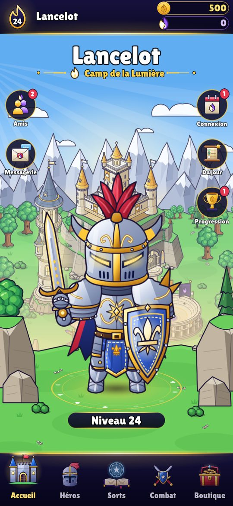
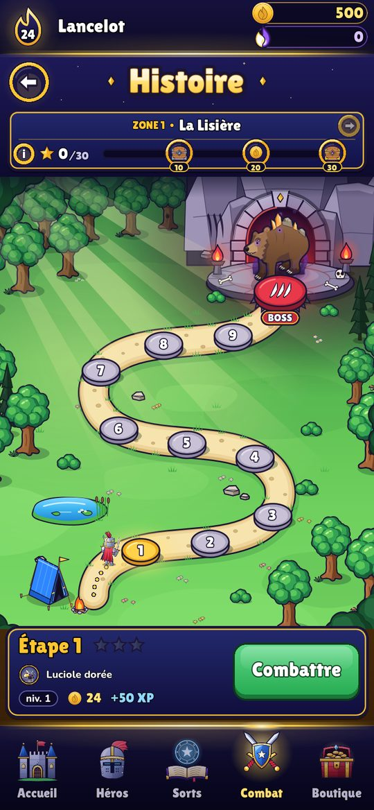
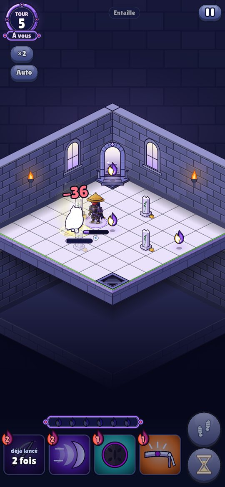

AVA
Duels de héros, Lumière et Ombre
AVA est un jeu gratuit de combats tactiques au tour par tour, pour iPhone et dans le navigateur. Choisissez votre camp, la Lumière ou l'Ombre, faites grandir votre héros et menez-le au sommet.
Jouer à AVAGratuit, dans le navigateur de votre téléphone ou de votre ordinateur. Bientôt sur l'App Store.



Le jeu
- Six héros, trois par camp, chacun avec ses sorts, à faire grandir jusqu'au niveau 100.
- Des combats au tour par tour sur un plateau : déplacez-vous, gérez votre Éther, lancez le bon sort au bon moment.
- Des modes variés : l'Histoire en 10 zones, les Donjons, la Tour, le Dédale, la défense du Bastion.
- Des centaines d'objets et de panoplies à collectionner, à forger et à améliorer.
- Avec les autres joueurs : défiez vos amis en direct, grimpez au Ladder, gagnez votre Arène de la semaine, discutez avec tout le serveur.
Votre compte
Jouez en invité, sans rien donner, ou connectez-vous avec Google (et bientôt Apple) pour retrouver votre partie sur tous vos appareils. AVA ne se sert de votre compte que pour vous reconnaître et sauvegarder votre partie : pas de publicité, pas de revente de données. Tout est expliqué dans les règles de confidentialité.
Le jeu est gratuit. Des achats facultatifs (Éther, packs de coffres) existent ; les chances des coffres sont affichées dans la boutique.